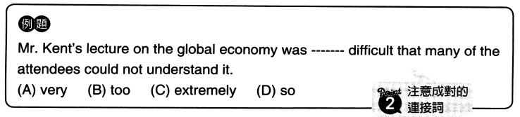
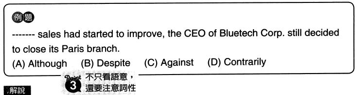

使句子語意保有完整性
重要連接詞
unless
He will help you unless he is busy.
yet 然而; 但
He is young, yet everyone relies on him. 雖然他很年輕，但大家都依賴他。
whereas 而; 相反地
The previous manager was talktive whereas the new one is quiet.
as long as 只要
You can borrow my camera as long as you return it tomorrow.
while 然而/當
當
While the economy is recovering, many companies are still struggling. 經濟復甦時，許多公司卻還在苦苦掙扎。
once
This device is easy to use once you know how to use it.
重要介系詞
by 在...之前
finish the report by Monday 週一前完成報告
in 在...之後
He will return in five days 他五天後回來
over 在..期間
over the past three months 過去三個月
on 關於...
a book on the global economy 關於全球經濟的書
with 在...狀態下; 使用...
with his eyes closed (with + O + 補語)
他的眼睛閉著
open the door with the key 用鑰匙開門
注意成對的連接詞

固定使用方法so...that...
所以答案選D
重要的成對連接詞
both A and B
A和B都...
either A or B
A或B其中一個...
neither A nor B
A和B都不...
whether A or B
不管是A或B...
not A but B
不是A而是B
not only A but also B
不只A, B也...
so + 形容詞/副詞 + that S+V
如此...以致於...
such + 形容詞/副詞 + that S+V
如此...以致於...
so that S+V
為的是...; 以便...
in that S+V
基於...; 因為...
注意詞性

BC為介係詞, D為副詞
因有S+V子句, 所以選連接詞的A